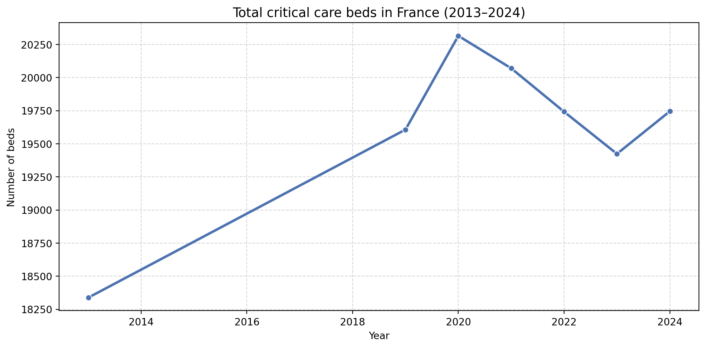
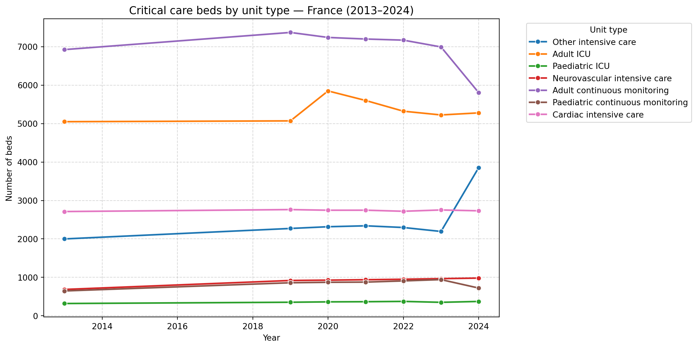
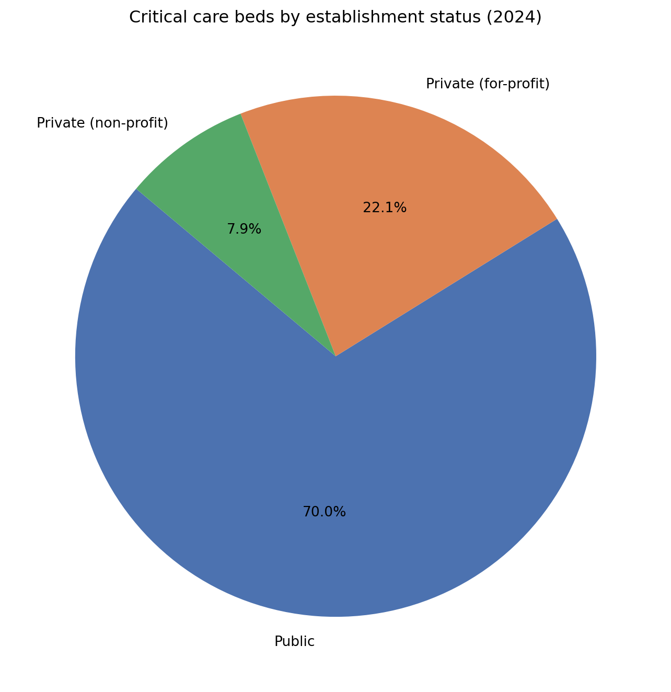
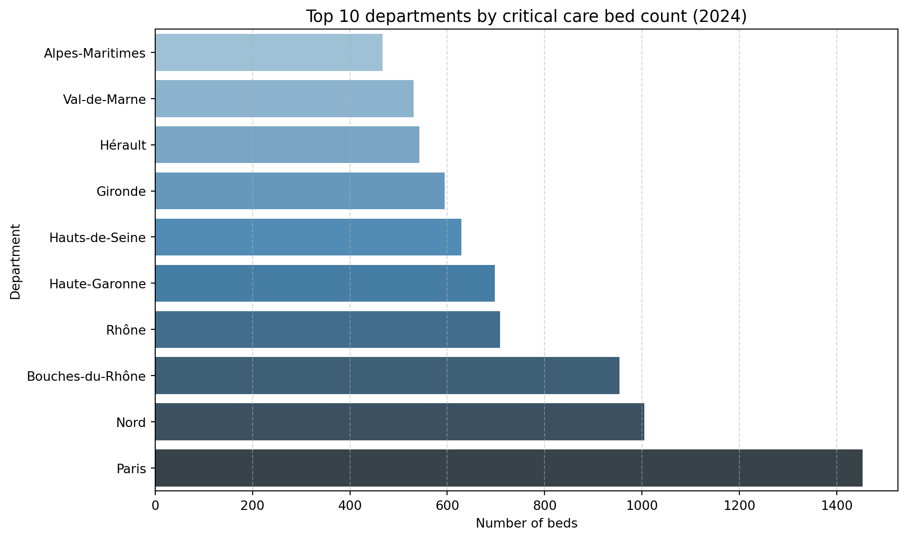

evolution of critical care bed capacity in French hospitals between 2013 and 2024, using open data published by the DREES (Direction de la recherche, des études, de l’évaluation et des statistiques), the French Ministry of Health’s statistical department.
Published
December 1, 2024
Introduction
As a business school student specialising in Information Systems with a strong interest in the healthcare sector, I wanted to combine both fields in a concrete data project.
This analysis explores the evolution of critical care bed capacity in French hospitals between 2013 and 2024, using open data published by the DREES (Direction de la recherche, des études, de l’évaluation et des statistiques), the French Ministry of Health’s statistical department.
NoteKey questions explored
How did critical care capacity evolve over the past decade?
What was the measurable impact of the Covid-19 pandemic on hospital capacity?
How are critical care beds distributed between public and private institutions?
Which departments concentrate the most critical care resources?
The dataset contains 5 variables: id_geo, statut_etab, annee, uni, nb_lit. No missing values — the dataset is clean and ready for analysis.
2. National Evolution of Critical Care Beds (2013–2024)
evolution = df[df["id_geo"] =="00_FR"].groupby("annee")["nb_lit"].sum().reset_index()plt.figure(figsize=(10, 5))sns.lineplot(data=evolution, x="annee", y="nb_lit", marker="o", color="#4C72B0", linewidth=2.5)plt.title("Total critical care beds in France (2013–2024)", fontsize=13)plt.xlabel("Year")plt.ylabel("Number of beds")plt.grid(True, linestyle="--", alpha=0.5)plt.tight_layout()plt.show()

Evolution of total critical care beds in France (2013–2024)
TipKey observation
The chart shows a steady increase from 2013 to 2019, followed by a sharp peak in 2020 (+6% vs 2019). This spike directly reflects the emergency measures taken during the Covid-19 pandemic, when French hospitals were required to rapidly scale up their critical care capacity. From 2021 onwards, capacity progressively returned to pre-pandemic levels.
3. Evolution by Type of Critical Care Unit
types_lits = df[df["id_geo"] =="00_FR"].groupby(["annee", "uni"])["nb_lit"].sum().reset_index()types_lits["uni"] = types_lits["uni"].replace({"REAADU": "Adult ICU","REAENF": "Paediatric ICU","USIC": "Cardiac intensive care","SIUNV": "Neurovascular intensive care","SURVADU": "Adult continuous monitoring","SURVENF": "Paediatric continuous monitoring","AUTSI": "Other intensive care"})plt.figure(figsize=(12, 6))sns.lineplot(data=types_lits, x="annee", y="nb_lit", hue="uni", marker="o", linewidth=2)plt.title("Critical care beds by unit type — France (2013–2024)", fontsize=13)plt.xlabel("Year")plt.ylabel("Number of beds")plt.legend(title="Unit type", bbox_to_anchor=(1.05, 1), loc="upper left")plt.grid(True, linestyle="--", alpha=0.5)plt.tight_layout()plt.show()

Critical care beds by unit type in France (2013–2024)
TipKey observation
The 2020 surge was driven primarily by adult ICU beds. Adult continuous monitoring beds represent the largest category overall, but show a notable drop in 2024, suggesting a structural reorganisation of critical care capacity post-pandemic.
4. Distribution by Establishment Status (2024)
statut = df[ (df["id_geo"] =="00_FR") & (df["annee"] ==2024)].groupby("statut_etab")["nb_lit"].sum().reset_index()statut["statut_etab"] = statut["statut_etab"].replace({"1_Public": "Public","2_Prive_BL": "Private (for-profit)","3_Prive_BNL": "Private (non-profit)"})plt.figure(figsize=(7, 7))plt.pie(statut["nb_lit"], labels=statut["statut_etab"], autopct="%1.1f%%", colors=["#4C72B0", "#DD8452", "#55A868"], startangle=140)plt.title("Critical care beds by establishment status (2024)", fontsize=12)plt.tight_layout()plt.show()

Distribution of critical care beds by establishment status in France (2024)
TipKey observation
Public hospitals account for 70% of all critical care beds in France. This distribution is particularly relevant in the context of healthcare information systems — public and private institutions operate on different IS architectures, regulatory frameworks, and data governance models, a key challenge for interoperability in the French health system.
5. Top 10 Departments by Critical Care Capacity (2024)
deps = df[ (df["annee"] ==2024) & (~df["id_geo"].isin(["00_FR", "00_MET"]))].groupby("id_geo")["nb_lit"].sum().reset_index()deps = deps.sort_values("nb_lit", ascending=True).tail(10)deps["nom"] = deps["id_geo"].str.split("_", n=1).str[1]plt.figure(figsize=(10, 6))sns.barplot(data=deps, x="nb_lit", y="nom", hue="nom", palette="Blues_d", legend=False)plt.title("Top 10 departments by critical care bed count (2024)", fontsize=13)plt.xlabel("Number of beds")plt.ylabel("Department")plt.grid(True, linestyle="--", alpha=0.5, axis="x")plt.tight_layout()plt.show()

Top 10 French departments by critical care bed count (2024)
TipKey observation
Paris leads by a significant margin, followed by Nord and Bouches-du-Rhône. This concentration highlights a persistent territorial inequality in access to critical care resources, a known challenge in French health policy often discussed alongside the issue of déserts médicaux.
Summary & Reflections
Finding
Insight
+6% beds in 2020
Measurable Covid-19 emergency response
70% public sector
Public hospitals dominate critical care
Paris, Nord, BdR lead
Territorial concentration of resources
Post-2021 decline
Gradual return to structural capacity
This project allowed me to apply data manipulation and visualisation skills to a real-world healthcare dataset. Beyond the technical exercise, it reinforced my understanding of how data can inform strategic decisions in hospital management — whether around resource allocation, capacity planning, or IS design.
As someone aiming to work at the intersection of healthcare and information systems, being able to read, clean, and interpret health data is a skill I consider essential for roles in MOA, AMOA, or project management in MedTech and pharma environments.